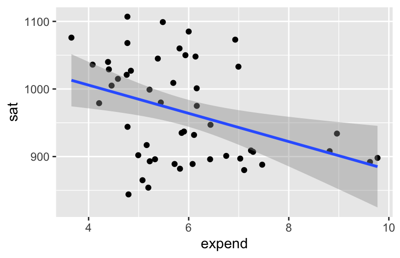
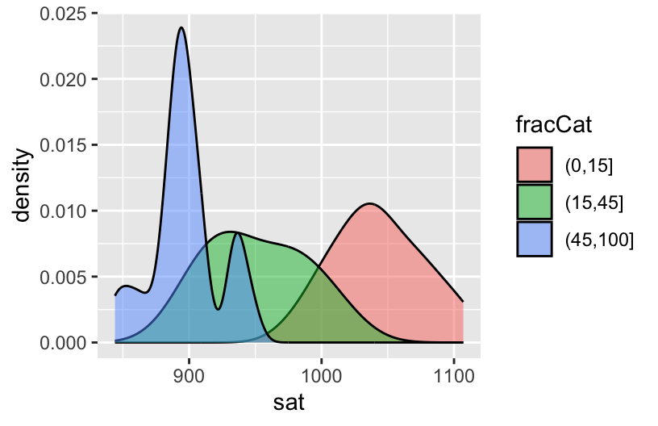
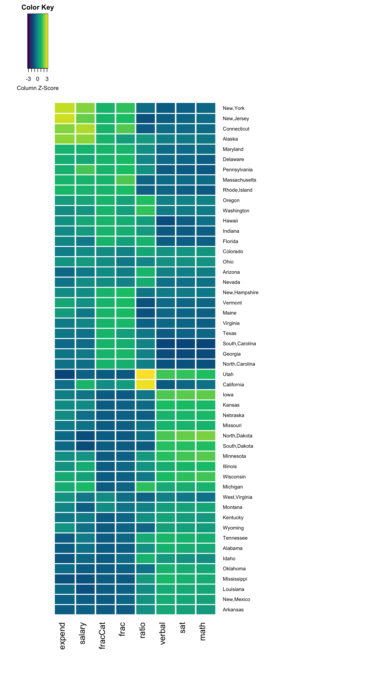

Use this file for practice with the mulivariate viz in-class activity. Refer to the class website for details.
10.1 Exercises (required)
The story
Though far from a perfect assessment of academic preparedness, SAT scores have historically been used as one measurement of a state’s education system. The education dataset contains various education variables for each state:
# Import and check out dataeducation <-read.csv("https://mac-stat.github.io/data/sat.csv")head(education)
A codebook is provided by Danny Kaplan who also made these data accessible:
library(tidyverse)# Import dataweather <-read.csv("https://mac-stat.github.io/data/weather_3_locations.csv") |>mutate(date =as.Date(date)) # Check out the first 6 rows# What are the units of observation?head(weather)
date location mintemp maxtemp rainfall evaporation sunshine
1 2020-01-01 Wollongong 17.1 23.1 0 NA NA
2 2020-01-02 Wollongong 17.7 24.2 0 NA NA
3 2020-01-03 Wollongong 19.7 26.8 0 NA NA
4 2020-01-04 Wollongong 20.4 35.5 0 NA NA
5 2020-01-05 Wollongong 19.8 21.4 0 NA NA
6 2020-01-06 Wollongong 18.3 22.9 0 NA NA
windgustdir windgustspeed winddir9am winddir3pm windspeed9am windspeed3pm
1 SSW 39 SSW SSE 20 15
2 SSW 37 S ENE 13 15
3 NE 41 NNW NNE 7 17
4 SSW 78 NE NNE 15 17
5 SSW 57 SSW S 31 35
6 NE 35 ESE NE 17 20
humidity9am humidity3pm pressure9am pressure3pm cloud9am cloud3pm temp9am
1 69 64 1014.9 1014.0 8 1 19.1
2 72 54 1020.1 1017.7 7 1 19.8
3 72 71 1017.5 1013.0 6 NA 23.4
4 77 69 1008.8 1003.9 NA NA 24.5
5 70 75 1018.9 1019.9 NA 7 20.7
6 71 71 1021.2 1018.2 NA NA 20.9
temp3pm raintoday risk_mm raintomorrow
1 22.9 No 0.0 No
2 23.6 No 0.0 No
3 25.7 No 0.0 No
4 26.7 No 0.0 No
5 20.0 No 0.0 No
6 22.6 No 0.8 No
# How many data points do we have? nrow(weather)
[1] 2367
# What type of variables do we have?str(weather)
'data.frame': 2367 obs. of 24 variables:
$ date : Date, format: "2020-01-01" "2020-01-02" ...
$ location : chr "Wollongong" "Wollongong" "Wollongong" "Wollongong" ...
$ mintemp : num 17.1 17.7 19.7 20.4 19.8 18.3 19.9 20.1 19.8 20.5 ...
$ maxtemp : num 23.1 24.2 26.8 35.5 21.4 22.9 25.6 23.2 23.1 25.4 ...
$ rainfall : num 0 0 0 0 0 0 0.8 1.6 0 0 ...
$ evaporation : num NA NA NA NA NA NA NA NA NA NA ...
$ sunshine : num NA NA NA NA NA NA NA NA NA NA ...
$ windgustdir : chr "SSW" "SSW" "NE" "SSW" ...
$ windgustspeed: int 39 37 41 78 57 35 44 41 39 56 ...
$ winddir9am : chr "SSW" "S" "NNW" "NE" ...
$ winddir3pm : chr "SSE" "ENE" "NNE" "NNE" ...
$ windspeed9am : int 20 13 7 15 31 17 30 31 24 19 ...
$ windspeed3pm : int 15 15 17 17 35 20 7 33 26 39 ...
$ humidity9am : int 69 72 72 77 70 71 76 77 76 79 ...
$ humidity3pm : int 64 54 71 69 75 71 72 76 79 76 ...
$ pressure9am : num 1015 1020 1018 1009 1019 ...
$ pressure3pm : num 1014 1018 1013 1004 1020 ...
$ cloud9am : int 8 7 6 NA NA NA NA 8 NA NA ...
$ cloud3pm : int 1 1 NA NA 7 NA NA NA NA NA ...
$ temp9am : num 19.1 19.8 23.4 24.5 20.7 20.9 22.9 21.3 21.2 23 ...
$ temp3pm : num 22.9 23.6 25.7 26.7 20 22.6 24.9 22.2 22.2 25.1 ...
$ raintoday : chr "No" "No" "No" "No" ...
$ risk_mm : num 0 0 0 0 0 0.8 1.6 0 0 1 ...
$ raintomorrow : chr "No" "No" "No" "No" ...
Exercise 1: SAT scores
Part a
# A histogram would work too!ggplot(education, aes(x = sat)) +geom_density()
Part b
average SAT scores range from roughly 800 to 1100. They appear bi-modal.
Exercise 2: SAT Scores vs Per Pupil Spending & SAT Scores vs Salaries
Part a
# Construct a plot of sat vs expend# Include a "best fit linear regression model"ggplot(education, aes(y = sat, x = expend)) +geom_point() +geom_smooth(method ="lm")

# Construct a plot of sat vs salary# Include a "best fit linear regression model"ggplot(education, aes(y = sat, x = salary)) +geom_point() +geom_smooth(method ="lm")
Part b
The higher the student expenditures and teacher salaries, the worse the SAT performance.
Exercise 3: SAT Scores vs Per Pupil Spending and Teacher Salaries
ggplot(education, aes(y = sat, x = salary, color = expend)) +geom_point() +geom_smooth(method ="lm")
Exercise 4: Another Way to Incorporate Scale
ggplot(education, aes(y = sat, x = salary, color =cut(expend, 2))) +geom_point() +geom_smooth(se =FALSE, method ="lm")
ggplot(education, aes(y = sat, x = salary, color =cut(expend, 3))) +geom_point() +geom_smooth(se =FALSE, method ="lm")
States with lower salaries and expenditures tend to have higher SAT scores.
Exercise 5: Finally an Explanation
Part a
ggplot(education, aes(x = fracCat)) +geom_bar()
Part b
The more students in a state that take the SAT, the lower the average scores tend to be. This is probably related to self-selection.
ggplot(education, aes(x = sat, fill = fracCat)) +geom_density(alpha =0.5)

Part c
When we control for the fraction of students that take the SAT, SAT scores increase with expenditure.
ggplot(education, aes(y = sat, x = expend, color = fracCat)) +geom_point() +geom_smooth(method ="lm")
Part d
Student participation tends to be lower among states with lower expenditures (which are likely also the states with higher ed institutions that haven’t historically required the SAT). Those same states tend to have higher SAT scores because of the self-selection of who participates.
Exercise 6: Heat Maps
Part a
# Remove the "State" column and use it to label the rows# Then scale the variablesplot_data <- education |>column_to_rownames("State") |>data.matrix() |>scale()# Load the gplots package needed for heatmapslibrary(gplots)# Construct heatmap 1heatmap.2(plot_data,dendrogram ="none",Rowv =NA, scale ="column",keysize =0.7, density.info ="none",col =hcl.colors(256), margins =c(10, 20),colsep =c(1:7), rowsep = (1:50), sepwidth =c(0.05, 0.05),sepcolor ="white", trace ="none")
# Construct heatmap 2heatmap.2(plot_data,dendrogram ="none",Rowv =TRUE, ### WE CHANGED THIS FROM NA TO TRUEscale ="column",keysize =0.7, density.info ="none",col =hcl.colors(256), margins =c(10, 20),colsep =c(1:7), rowsep = (1:50), sepwidth =c(0.05, 0.05),sepcolor ="white", trace ="none")

# Construct heatmap 3heatmap.2(plot_data,dendrogram ="row", ### WE CHANGED THIS FROM "none" TO "row"Rowv =TRUE, scale ="column",keysize =0.7, density.info ="none",col =hcl.colors(256), margins =c(10, 20),colsep =c(1:7), rowsep = (1:50), sepwidth =c(0.05, 0.05),sepcolor ="white", trace ="none")
Part b
Similar values in verbal, math, and sat.
High contrast (an inverse relationship) verbal/math/sat scores and the fraction of students that take the SAT.
Outliers of Utah and California in ratio (more students per teacher).
While grouped, fraction and salary are not as similar to each other as the sat scores; it is also interesting to notice states that have high ratios have generally low expenditures per student.
Exercise 7: Star Plots
Part a
MN is high on the SAT performance related metrics and low on everything else. MN is similar to Iowa, Kansas, Mississippi, Missouri, the Dakotas…
When the states are in geographical ordering, we’d notice more easily that states in similar regions of the U.S. have similar patterns of these variables.
stars(plot_data,flip.labels =FALSE,locations =data.matrix(as.data.frame(state.center)), # added external data to arrange by geo locationkey.loc =c(-110, 28),cex =1, draw.segments =TRUE)
Source Code
---title: "Mulivariate Viz"---Use this file for practice with the **mulivariate viz** in-class activity. Refer to the class website for details.---title: "Multivariate Viz"number-sections: trueexecute: warning: falsefig-height: 2.75fig-width: 4.25fig-env: 'figure'fig-pos: 'h'fig-align: centercode-fold: false---## Exercises (required)### The story {-}Though far from a perfect assessment of academic preparedness, SAT scores have historically been used as one measurement of a state's education system. The `education` dataset contains various education variables for each state:```{r}# Import and check out dataeducation <-read.csv("https://mac-stat.github.io/data/sat.csv")head(education)```A codebook is provided by Danny Kaplan who also made these data accessible:```{r}library(tidyverse)# Import dataweather <-read.csv("https://mac-stat.github.io/data/weather_3_locations.csv") |>mutate(date =as.Date(date)) # Check out the first 6 rows# What are the units of observation?head(weather)# How many data points do we have? nrow(weather)# What type of variables do we have?str(weather)```### Exercise 1: SAT scores {-}#### Part a {-}```{r}# A histogram would work too!ggplot(education, aes(x = sat)) +geom_density()```#### Part b {-}average SAT scores range from roughly 800 to 1100. They appear bi-modal.### Exercise 2: SAT Scores vs Per Pupil Spending & SAT Scores vs Salaries {-}#### Part a {-}```{r}# Construct a plot of sat vs expend# Include a "best fit linear regression model"ggplot(education, aes(y = sat, x = expend)) +geom_point() +geom_smooth(method ="lm")``````{r}# Construct a plot of sat vs salary# Include a "best fit linear regression model"ggplot(education, aes(y = sat, x = salary)) +geom_point() +geom_smooth(method ="lm")```#### Part b {-}The higher the student expenditures and teacher salaries, the worse the SAT performance.### Exercise 3: SAT Scores vs Per Pupil Spending *and* Teacher Salaries {-}```{r}ggplot(education, aes(y = sat, x = salary, color = expend)) +geom_point() +geom_smooth(method ="lm")```### Exercise 4: Another Way to Incorporate Scale {-}```{r}ggplot(education, aes(y = sat, x = salary, color =cut(expend, 2))) +geom_point() +geom_smooth(se =FALSE, method ="lm")ggplot(education, aes(y = sat, x = salary, color =cut(expend, 3))) +geom_point() +geom_smooth(se =FALSE, method ="lm")```States with lower salaries and expenditures tend to have higher SAT scores.### Exercise 5: Finally an Explanation {-}#### Part a {-}```{r}ggplot(education, aes(x = fracCat)) +geom_bar()```#### Part b {-}The more students in a state that take the SAT, the lower the average scores tend to be. This is probably related to self-selection.```{r}ggplot(education, aes(x = sat, fill = fracCat)) +geom_density(alpha =0.5)```#### Part c {-}When we control for the fraction of students that take the SAT, SAT scores *increase* with expenditure.```{r}ggplot(education, aes(y = sat, x = expend, color = fracCat)) +geom_point() +geom_smooth(method ="lm")```#### Part d {-}Student participation tends to be lower among states with lower expenditures (which are likely also the states with higher ed institutions that haven't historically required the SAT). Those same states tend to have higher SAT scores because of the self-selection of who participates.### Exercise 6: Heat Maps {-}#### Part a {-}```{r fig.width = 8, fig.height = 15}# Remove the "State" column and use it to label the rows# Then scale the variablesplot_data <- education |> column_to_rownames("State") |> data.matrix() |> scale()# Load the gplots package needed for heatmapslibrary(gplots)# Construct heatmap 1heatmap.2(plot_data, dendrogram = "none", Rowv = NA, scale = "column", keysize = 0.7, density.info = "none", col = hcl.colors(256), margins = c(10, 20), colsep = c(1:7), rowsep = (1:50), sepwidth = c(0.05, 0.05), sepcolor = "white", trace = "none")``````{r fig.width = 8, fig.height = 15}# Construct heatmap 2heatmap.2(plot_data, dendrogram = "none", Rowv = TRUE, ### WE CHANGED THIS FROM NA TO TRUE scale = "column", keysize = 0.7, density.info = "none", col = hcl.colors(256), margins = c(10, 20), colsep = c(1:7), rowsep = (1:50), sepwidth = c(0.05, 0.05), sepcolor = "white", trace = "none")``````{r fig.width = 8, fig.height = 15}# Construct heatmap 3heatmap.2(plot_data, dendrogram = "row", ### WE CHANGED THIS FROM "none" TO "row" Rowv = TRUE, scale = "column", keysize = 0.7, density.info = "none", col = hcl.colors(256), margins = c(10, 20), colsep = c(1:7), rowsep = (1:50), sepwidth = c(0.05, 0.05), sepcolor = "white", trace = "none")```#### Part b {-}- Similar values in verbal, math, and sat.- High contrast (an inverse relationship) verbal/math/sat scores and the fraction of students that take the SAT.- Outliers of Utah and California in ratio (more students per teacher).- While grouped, fraction and salary are not as similar to each other as the sat scores; it is also interesting to notice states that have high ratios have generally low expenditures per student.### Exercise 7: Star Plots {-}#### Part a {-}MN is high on the SAT performance related metrics and low on everything else. MN is similar to Iowa, Kansas, Mississippi, Missouri, the Dakotas...```{r fig.width = 10, fig.height = 20}stars(plot_data, flip.labels = FALSE, key.loc = c(10, 1.5), cex = 1, draw.segments = TRUE)```#### Part b {-}When the states are in geographical ordering, we'd notice more easily that states in similar regions of the U.S. have similar patterns of these variables.```{r fig.width = 10, fig.height = 10}stars(plot_data, flip.labels = FALSE, locations = data.matrix(as.data.frame(state.center)), # added external data to arrange by geo location key.loc = c(-110, 28), cex = 1, draw.segments = TRUE)```